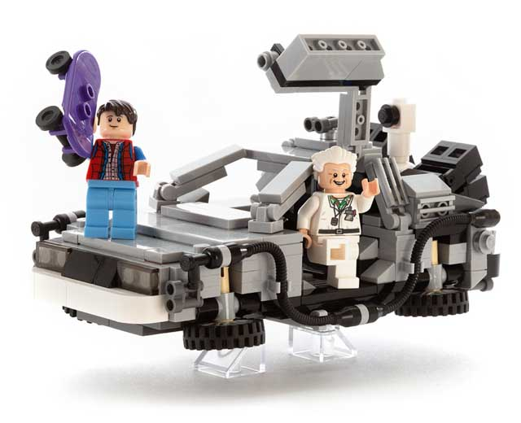

brève sur le SCM le plus populaire
Benjamin Garcia
: Senior developer
: Tellmeplus (since 2017)
: JUG Leader
: Montpellier Tech Hub member
Gestion de version
Centralisé

Distribué

Let’s play!

Pour aller plus loin
rebase.gitconfigalias.gitignoreles flows
Quelques outils
Shells
zsh & OhMyZsh & agnoster/alien
fish & OhMyFish & bobthefish
bash & bash-it
UI
sourceTree
Gitkracken
smartGit
Tower